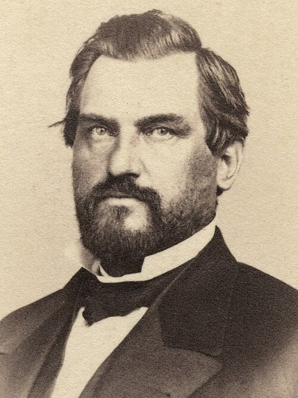

1824–1893
Leland Stanford
Governor; one of the Associates; founder of the university
Portrait (photograph (carte-de-visite), Bradley & Rulofson, San Francisco, 1860s): Bradley & Rulofson, between 1863 and 1883, likely 1860s. Public domain. Wikimedia Commons. Scaled from 2445×3261 to 500×667 px by the Commons thumbnailer; no other edits.

Why this role
site/corpus/rewrite/timeline.mdStanford elected governor.site/corpus/rewrite/GLOSSARY.md
The Associates / the Big Four: Collis P. Huntington, Mark Hopkins, Charles Crocker, Leland Stanford.books/cardinal/_project/event-ledger.csv
Stanford Founding Grant executed,Leland and Jane Stanford
Timeline
Select a mark or an entry to see its sources.
-
9 March 1824Born in Watervliet, New York Verified
Sources (2)
Appletons' Cyclopaedia of American Biography: Stanford, Leland · Wikisource: Appletons' Cyclopaedia of American Biography (1900) reference workSTANFORD, Leland, senator, b. in Watervliet, Albany co., N. Y., 9 March, 1824; d. in Palo Alto, Cal., 21 June. 1893.
University milestones - Stanford Archives Reference and Research Guide · Stanford University Libraries (Stanford Archives) institutional page1824 March 9 Leland Stanford born
-
30 September 1850Leland Stanford marries Jane Lathrop in Albany, New York Verified
With: Jane Stanford
Sources (2)
Jane Stanford · Governors of California (California State Library) institutional pageMarried: Leland Stanford on September 30, 1850
Jane L. Stanford: The woman behind Stanford University (archived) · Stanford University (Wayback Machine capture) institutional pageJane married Leland Stanford, a young lawyer, on September 30, 1850.
-
30 April 1861Central Pacific Railroad Company of California organized; Articles of Association adopted Verified
With: Collis Huntington, Mark Hopkins, Charles Crocker, Theodore Judah
Sources (2)
Collis Potter Huntington, vol. 1 (Evans, 1954), full text · Internet Archive (Mariners' Museum, 1954) scholarly workOn Tuesday, April 30, 1861, after frequent and earnest discussions among the group, the Central Pacific Railroad Company of California was organized under a general law of the state
Collis Potter Huntington, vol. 1 (Evans, 1954), full text · Internet Archive (Mariners' Museum, 1954) scholarly workThe officers elected were Leland Stanford, president; C. P. Huntington, vice-president; Mark Hopkins, treasurer;
-
28 June 1861Central Pacific Railroad incorporated Verified
Sacramento, CA · Four merchants and an engineer. Judah is bought out and dies in 1863.
Organized 30 April 1861 (Articles of Association adopted); certificate of incorporation filed in Sacramento 28 June 1861.
With: Charles Crocker, Collis Huntington, Mark Hopkins, Theodore Judah
Sources (4)
books/cardinal/_project/event-ledger.csv:161861-06-28,Central Pacific Railroad incorporated,Leland Stanford; Collis Hunting
Collis Potter Huntington, vol. 1 (Evans, 1954), full text · Internet Archive (Mariners' Museum, 1954) scholarly workOn Friday June 28, 1861, the Central Pacific Railroad Company filed their certificate of incorporation in the office of the Secretary of State at Sacramento.
Collis Potter Huntington, vol. 1 (Evans, 1954), full text · Internet Archive (Mariners' Museum, 1954) scholarly workOn Tuesday, April 30, 1861, after frequent and earnest discussions among the group, the Central Pacific Railroad Company of California was organized under a general law of the state
Central Pacific Railroad (Wikipedia) · Wikipedia encyclopedia (tertiary)1861 June 28, 1861: "Central Pacific Rail Road of California" incorporated
-
4 September 1861Election day, 4 September 1861. Appletons says he served from December 1861; Wikipedia gives his term as January 1862 to December 1863.Elected governor of California Verified
Sources (3)
site/corpus/rewrite/timeline.mdStanford elected governor.
University milestones - Stanford Archives Reference and Research Guide · Stanford University Libraries (Stanford Archives) institutional page1861 Sept. 4 Leland Stanford elected governor of California
Appletons' Cyclopaedia of American Biography: Stanford, Leland · Wikisource: Appletons' Cyclopaedia of American Biography (1900) reference workThe same year he was elected governor of California, and served from December, 1861, till December, 1863.
-
10 May 1869At Promontory, "swung and missed" the wired last spike Verified
Both Stanford and Thomas Durant of the Union Pacific missed; a telegraph operator sent "done" anyway.
Sources (5)
site/corpus/rewrite/timeline.mdPromontory: Stanford “swung and missed.”
NPS Historical Handbook: Golden Spike (Promontory ceremony) · National Park Service (NPS Historical Handbook 40, hosted at npshistory.com) reference workUsing the wired sledge, Stanford and Durant both swung at the wired spike. Both missed, to the delight of the crowd.
Golden Spike National Historic Site · Utah Division of State History (History to Go) institutional pageHowever, Stanford and Thomas Durant from the Union Pacific both missed the spike.
University milestones - Stanford Archives Reference and Research Guide · Stanford University Libraries (Stanford Archives) institutional page1869 May 10 Leland Stanford drives the Gold Spike at Promontory, Utah, for the first transcontinental railroad
Promontory Summit · Wikipedia encyclopedia (tertiary)Stanford missed the Spike, hitting the wooden tie instead; however, the telegraph operator hit his key as though Stanford had hit the spike.
-
1884Reported as spoken on the morning of 13 March 1884, the day Leland Jr. died. The story is attested only from 1891.Reported vow after his son's death: "The children of California shall be our children" Contested
The sentiment is well attested but the exact wording and the moment are not. Elliott finds the earliest form was "my children" and that Jordan proposed "our children" as a motto in April 1891.
With: Jane Stanford
Sources (4)
site/corpus/rewrite/chapters/ep4-02-florence-vow.md"The children of California shall be our children," Leland Stanford told his wife, Jane
Stanford University: The First Twenty-Five Years (O. L. Elliott, 1937) · Stanford University Press, 1937 (full text on archive.org) scholarly workIn his very first meeting with Dr. Jordan, Mr Stanford told of waking from the troubled sleep into which he had PLANS AND BEGINNINGS 13 fallen, on the morning of his son's death, with these words on his lips, "The children of California shall be my children."
Stanford University: The First Twenty-Five Years (O. L. Elliott, 1937) · Stanford University Press, 1937 (full text on archive.org) scholarly worka few weeks later (April 1 1, 1891 ) wrote as follows: "I heard you use [the following] sentence, and it occurs to me, if it should meet your pleasure and that of Mrs. Stanford, that it would make a good motto for the California University:
Stanford University History: Founding (archived 2008) · Stanford University (Wayback Machine capture) institutional pageStanford, who had remained at Leland's bedside continuously, fell into a troubled sleep the morning the boy died. When he awakened he turned to his wife and said,
-
11 November 1885Stanford Founding Grant executed Verified
Palo Alto, CA · Self-perpetuating board, insulated from politics, endowed with land that cannot be sold. The clause that produces the research park in 1951.
With: Jane Stanford
Source (1)
books/cardinal/_project/event-ledger.csv:241885-11-11,Stanford Founding Grant executed,Leland and Jane Stanford,"Palo Alto,
-
March 1891Arrived Saturday 21 March 1891; offer and acceptance on Sunday 22 March, per Stanford Archives.The Stanfords travel to Bloomington, Indiana, and offer David Starr Jordan the presidency Verified
With: Jane Stanford, David Starr Jordan
Sources (5)
site/corpus/rewrite/timeline.mdThe Stanfords travel to Bloomington to recruit David Starr Jordan.
Stanford University: The First Twenty-Five Years (O. L. Elliott, 1937) · Stanford University Press, 1937 (full text on archive.org) scholarly workBloomington, the seat of the University, was reached Saturday afternoon, March 2 1 . Dr. Jordan was absent from home taking part in the dedicatory exercises of the new Science Hall at the University of Illinois.
University milestones - Stanford Archives Reference and Research Guide · Stanford University Libraries (Stanford Archives) institutional page1891 March 22 David Starr Jordan accepts Leland Stanford's offer to become the university's first president
David Starr Jordan papers, 1861-1981 (SC0058) · Online Archive of California, Stanford University Special Collections finding aid institutional pageIn the Spring of 1891, Leland Stanford offered Jordan the presidency of the university established in memory of the late son of Leland Stanford and Jane Lathrop Stanford.
David Starr Jordan · Stanford University and the 1906 Earthquake (Stanford University Libraries) institutional pageleading the Stanfords to board their private railroad car and travel to Bloomington, Indiana, to meet with Jordan.
-
21 June 1893Leland Stanford dies during the Panic of 1893 Verified
Palo Alto, CA · Estate frozen; the federal government sues for $15 million. The university nearly closes.
Source (1)
books/cardinal/_project/event-ledger.csv:281893-06-21,Leland Stanford dies during the Panic of 1893,Leland Stanford,"Palo A
No entries match.
Family history
- Parent Elizabeth Phillips Stanford · Mother
Source
Leland Stanford · Wikipedia encyclopedia (tertiary)Leland Stanford was born on March 9, 1824, in what was then Watervliet, New York (later the Town of Colonie). He was one of eight children of Josiah and Elizabeth Phillips Stanford.
- Parent Josiah Stanford · Father
Source
Leland Stanford · Wikipedia encyclopedia (tertiary)Leland Stanford was born on March 9, 1824, in what was then Watervliet, New York (later the Town of Colonie). He was one of eight children of Josiah and Elizabeth Phillips Stanford.
- Spouse Jane Lathrop Stanford · Married (Jane is Leland's wife)
Source
site/corpus/rewrite/chapters/ep4-02-florence-vow.mdLeland Stanford told his wife, Jane
- Child Leland Stanford Jr. · Father of their only child
Source
site/corpus/rewrite/chapters/ep4-02-florence-vow.mdHe was the Stanfords' only child.
- Sibling Charles Stanford · Older brother
Source
Charles Stanford (politician) · Wikipedia encyclopedia (tertiary)He was the son of Josiah Stanford (1795-1862) and Elizabeth (Phillips) Stanford (1791-1873).
Leland Stanford · Wikipedia encyclopedia (tertiary)Leland Stanford was born on March 9, 1824, in what was then Watervliet, New York (later the Town of Colonie). He was one of eight children of Josiah and Elizabeth Phillips Stanford.
- Sibling Thomas Welton Stanford · Younger brother
Source
Thomas Welton Stanford · Wikipedia encyclopedia (tertiary)which was founded by his older brother Leland Stanford.
- Sibling other brothers and sisters (the sources disagree on how many; Wikipedia says eight children in all) (not named in the notes) · Siblings
Source
Leland Stanford · Wikipedia encyclopedia (tertiary)Leland Stanford was born on March 9, 1824, in what was then Watervliet, New York (later the Town of Colonie). He was one of eight children of Josiah and Elizabeth Phillips Stanford.
Connections
- Recruited David Starr Jordan · Recruited him to Stanford
Source
site/corpus/rewrite/timeline.mdThe Stanfords travel to Bloomington to recruit David Starr Jordan.
- Partners Collis P. Huntington · The Associates (the Big Four)
Source
site/corpus/rewrite/GLOSSARY.mdThe Associates / the Big Four: Collis P. Huntington, Mark Hopkins, Charles Crocker, Leland Stanford.
- Partners Mark Hopkins · The Associates (the Big Four)
Source
site/corpus/rewrite/GLOSSARY.mdThe Associates / the Big Four: Collis P. Huntington, Mark Hopkins, Charles Crocker, Leland Stanford.
- Partners Charles Crocker · The Associates (the Big Four)
Source
site/corpus/rewrite/GLOSSARY.mdThe Associates / the Big Four: Collis P. Huntington, Mark Hopkins, Charles Crocker, Leland Stanford.
Appear in the same recorded event:
Organisations
- President Central Pacific Railroad
Source
Central Pacific Railroad · Wikipedia encyclopedia (tertiary)Stanford served as president (at the same time he was elected governor of California), Huntington served as vice-president in charge of fundraising and purchasing, Hopkins was treasurer and Crocker was in charge of construction.
- Founder Stanford University
Source
Stanford University · Wikipedia encyclopedia (tertiary)Stanford University was founded in 1885 by Leland and Jane Stanford as a tribute to the memory of their only child, Leland Stanford Jr., who had died of typhoid in 1884 at the age of 15.
Places
Sources
- Rewrite master timeline · 5 citations
site/corpus/rewrite/timeline.md - Rewrite names and terms glossary · 4 citations
site/corpus/rewrite/GLOSSARY.md - Event ledger · 4 citations
books/cardinal/_project/event-ledger.csv - Rewrite chapter ep4-02-florence-vow (Episode 4: The Boy and the Farm) · 3 citations
site/corpus/rewrite/chapters/ep4-02-florence-vow.md - University milestones - Stanford Archives Reference and Research Guide (Stanford University Libraries (Stanford Archives)) · 4 citations
https://guides.library.stanford.edu/c.php?g=1311993&p=9846400 - Collis Potter Huntington, vol. 1 (Evans, 1954), full text (Internet Archive (Mariners' Museum, 1954)) · 4 citations
https://archive.org/stream/collispotterhunt01evan/collispotterhunt01evan_djvu.txt - Leland Stanford (Wikipedia) · 4 citations
https://en.wikipedia.org/wiki/Leland_Stanford - Stanford University: The First Twenty-Five Years (O. L. Elliott, 1937) (Stanford University Press, 1937 (full text on archive.org)) · 3 citations
https://archive.org/stream/stanfroduniversi009361mbp/stanfroduniversi009361mbp_djvu.txt - Central Pacific Railroad (Wikipedia) (Wikipedia) · 2 citations
https://en.wikipedia.org/wiki/Central_Pacific_Railroad - Appletons' Cyclopaedia of American Biography: Stanford, Leland (Wikisource: Appletons' Cyclopaedia of American Biography (1900)) · 2 citations
https://en.wikisource.org/wiki/Appletons%27_Cyclop%C3%A6dia_of_American_Biography/Stanford,_Leland - Stanford University (Wikipedia) · 1 citation
https://en.wikipedia.org/wiki/Stanford_University - Jane Stanford (Governors of California (California State Library)) · 1 citation
https://governors.library.ca.gov/firstladies/08-stanford.html - Jane L. Stanford: The woman behind Stanford University (archived) (Stanford University (Wayback Machine capture)) · 1 citation
https://web.archive.org/web/20160521025646/http:/janestanford.stanford.edu/biography.html - NPS Historical Handbook: Golden Spike (Promontory ceremony) (National Park Service (NPS Historical Handbook 40, hosted at npshistory.com)) · 1 citation
https://npshistory.com/handbooks/historical/40/hh40q.htm - Golden Spike National Historic Site (Utah Division of State History (History to Go)) · 1 citation
https://historytogo.utah.gov/post/golden-spike/ - Promontory Summit (Wikipedia) · 1 citation
https://en.wikipedia.org/wiki/Promontory_Summit - Stanford University History: Founding (archived 2008) (Stanford University (Wayback Machine capture)) · 1 citation
https://web.archive.org/web/20080129093210/http:/www.stanford.edu/home/stanford/history/begin.html - David Starr Jordan papers, 1861-1981 (SC0058) (Online Archive of California, Stanford University Special Collections finding aid) · 1 citation
https://oac.cdlib.org/findaid/ark:/13030/tf3f59n6bn - David Starr Jordan (Stanford University and the 1906 Earthquake (Stanford University Libraries)) · 1 citation
https://quake06.stanford.edu/david-starr-jordan - Charles Stanford (politician) (Wikipedia) · 1 citation
https://en.wikipedia.org/wiki/Charles_Stanford_(politician) - Thomas Welton Stanford (Wikipedia) · 1 citation
https://en.wikipedia.org/wiki/Thomas_Welton_Stanford